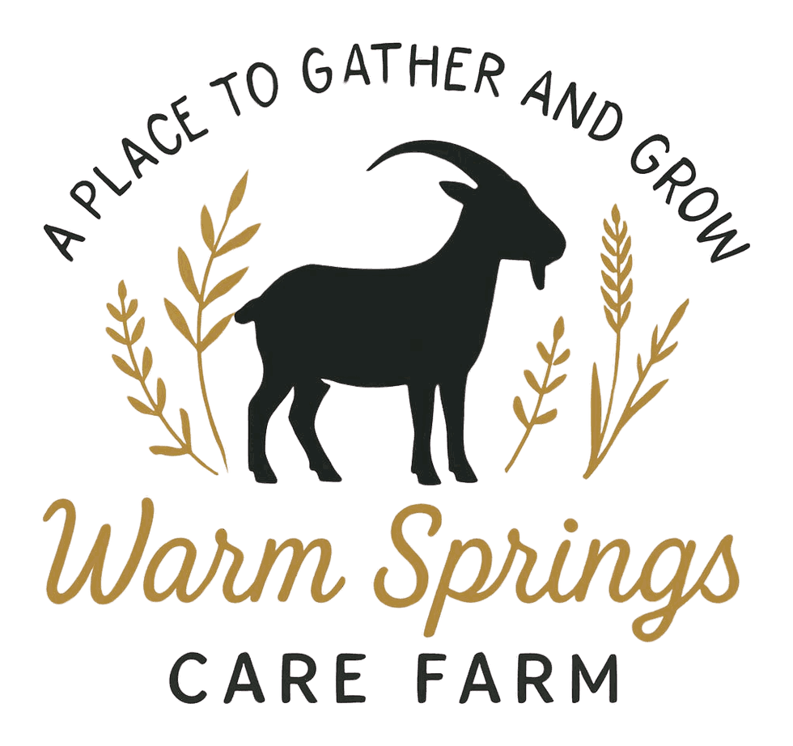

A working care farm in Boise's East End
Real chores. Animals with names. A calm place to grow.
Warm Springs is a century-old horse farm, put to work for kids. Children ages 7 to 12 feed the goats, collect the eggs, and tend the garden, and they go home calmer and a little more sure of themselves.

What kids take home
A working farm, not a petting zoo
Kids at Warm Springs don't watch the farm run. They help run it. Along the way they build three things they carry home.
Calm
Animals set a slower pace. Kids learn to match it, and to find that steady feeling on their own.
Confidence
Every child has a job, and every job matters. A goat that gets fed on time is proof they can do hard things.
Connection
Small groups mean every kid is known by name. Teen leaders show them the ropes, and friendships grow from shared work.
Find your way in
Families, volunteers, schools, and supporters all start in the same place: a first visit to the farm.
For families
Programs
Barn Club, Pre-4-H Club, field trips, partner classes, and farm-based therapy.
Explore programsFor helpers
Volunteer
Teens, adults, families, and groups keep the animals fed and the gardens growing.
Lend a handFor everyone
Visit
Every visit is by appointment. Sign a waiver, then book a first visit with Linda.
Plan your visitFor supporters
Give
Gifts pay for feed, vet care, scholarships, and the daily work of the farm.
Support the farmTherapist, school counselor, or pediatrician? See how farm-based therapy referrals work.
“For me, looking forward to going to the farm is what gets me through the day. Every time I come, I enjoy working with my hands, because it lets me process and slow down, and makes me feel so peaceful after.”
Teen volunteer [Confirm permission]
How to start
Three simple steps
Sign the waiver
Every adult and child completes one before their first visit. It takes a few minutes.
Sign a waiverCome meet the farm
Tour the barn, meet the animals, and talk with Linda about what you hope to get from your time here.
Meet the founder
Linda Haley
Linda is an educator and gardener who built the farm on a belief she formed in classrooms and gardens: kids feel calmer and more capable when they have real work to do, living things to care for, and adults who notice what they do well.
She teaches every child the same three steps: notice what needs doing, get what you need, and go do it. Now she is documenting how Warm Springs works, so other communities can build care farms of their own.
Good neighbors
The farm works alongside partners who share the work, from licensed therapists to local artists.
- Children's Home Counseling ServicesFarm-based therapy
- 4-H of Ada CountyPre-4-H Club
- Fox & Kids StudioArt Club
- National Charity League of IdahoVolunteers
- Good Heart TechSupporter
Get farm news
Seasonal updates, event dates, and stories from the barn, a few times a season.